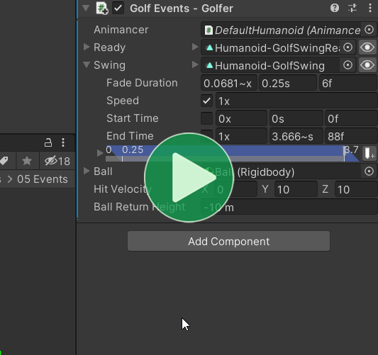

There are several different ways of setting up Animancer Events:
| Approach | Description | Benefits |
|---|---|---|
| Transitions | Configure the event details in the Inspector. | Easily adjust the event times in the Inspector and using the Transition Preview Window to align them correctly with the animation's visuals. |
| Code | Configure the event details in scripts. | Keeping all your game logic in scripts helps avoid bugs and create reliable systems. |
| Hybrid | Configure the event times in the Inspector and their callbacks in scripts. | Allows non-programmers to adjust event times while allowing programmers to write reliable scripts. |
Transitions
Transitions allow you to configure Animancer Events in the Inspector:

UnityEventsor UltEvents can be used to configure the event callbacks in the Inspector, but it's often better to use the Hybrid approach to keep all your important logic in scripts.- The Transition Preview Window can be useful to see what the animated character will look like when the event occurs.
- A transition defines how it fades in but not how it fades out (because that gets determined by the next transition), so the Inspector timeline display simply uses a default value. If the end time is less than the animation length, it shows the fade out ending at the end of the animation. Or if the end time is greater than the length, it shows the default 0.25 second fade.
- Event Time Fields are always serialized as normalized time, regardless of which field you use to enter the value.
Controls
- You can select and edit events one at a time, or you can click the foldout arrow next to the timeline to instead show all of the events at once.
- Double Click in the timeline to add an event at that time.
- With an event selected:
- Left and Right Arrows nudge the event time one pixel to the side.
- Holding Shift moves 10 pixels at a time.
- Space rounds off the event time by one digit. For example:
0.123would become0.12and0.999would become1.
Code
Animancer Events can also be configured using code like this:
// A Melee Attack script:
[SerializeField] private AnimancerComponent _Animancer;
[SerializeField] private AnimationClip _Animation;
void Attack()
{
AnimancerState state = _Animancer.Play(_Animation);
// If the state didn't have a event sequence yet, give it one so we can initialize it.
if (state.Events(this, out AnimancerEvent.Sequence events))
{
// Call OnHitStart to activate the hit box when the animation passes 40% of its length.
events.Add(0.4f, OnHitStart);
// Call OnHitEnd to deactivate the hit box when the animation passes 60% of its length.
events.Add(0.6f, OnHitEnd);
// Return to Idle when the animation finishes.
events.OnEnd = EnterIdleState;
}
}
// These are the methods which the events will call.
private void OnHitStart() { }
private void OnHitEnd() { }
private void EnterIdleState() { }
See End Events for details about how the OnEnd event is different from others.
You can use Lambda Expressions and Anonymous Methods to define the code you want an event to run without needing to create another separate method:
[SerializeField] private AnimancerComponent _Animancer;
[SerializeField] private AnimationClip _Animation;
private GameObject _HitBox;
private void AttackWithLambdas()
{
AnimancerState state = _Animancer.Play(_Animation);
if (state.Events(this, out AnimancerEvent.Sequence events))
{
// Multi-Line Lambda expression:
events.Add(0.4f, () =>
{
_HitBox.SetActive(true);
});
// One-line Lambda expression:
events.Add(0.6f, () => _HitBox.SetActive(false));
}
}
During an event, AnimancerEvent.Current allows you to access its details as explained on the Event Utilities page.
Hybrid
Setting up Events in Transitions is usually the best way to configure their timing since you can preview the animation while doing so, but setting up Events in Code is often better for creating reliable scripts and avoiding bugs. Fortunately, you can have the best of both approaches by using a Transition to configure the Time but simply leaving its Callback blank and giving it a Name so that you can assign the callback in code using a String Asset or Reference to refer to that name.
There are 3 main ways to do this depending on the situation:
Central Events
If you want to register a callback for any event in any animation with a particular name, you can use the central event dictionary.
[SerializeField] private AnimancerComponent _Animancer;
[SerializeField] private StringAsset _EventName;
protected virtual void Awake()
{
_Animancer.Events.AddTo(_EventName, EventCallback);
}
private void EventCallback() { }
The Footstep Events sample uses this approach to keep the FootstepEvents script separate from the script that plays the Walk animation. The character could be given a Run animation with the same name for its events and they would automatically trigger the same callback without the event handling script having any contact with the animation playing script.
Transition Events
If you have a Transition, you can add callbacks to it which it will give to the states it creates.
[SerializeField] private AnimancerComponent _Animancer;
[SerializeField] private StringAsset _EventName;
[SerializeField] private ClipTransition _Transition;
protected virtual void Awake()
{
_Transition.Events.SetCallback(_EventName, EventCallback);
}
private void EventCallback() { }
The Golf Events sample uses this approach.
If you want to use a String Reference for the event name, you can also use the [EventNames] attribute to have the Inspector suggest which names the script is expecting.
private static readonly StringReference MyEvent = "MyEvent";
[SerializeField] private AnimancerComponent _Animancer;
[SerializeField, EventNames] private ClipTransition _Transition;
protected virtual void Awake()
{
_Transition.Events.SetCallback(MyEvent, EventCallback);
}
private void EventCallback() { }
That tells it to use any static fields containing StringReferences inside this class so it sees the MyEvent automatically. There are several other ways to use the attribute which are explained on the EventNamesAttribute API page.
| Expected Name | Unexpected Name |
|---|---|
 |
 |
| That attribute makes the Inspector show an icon with a tooltip listing the expected names. | And if an unexpected name is assigned, it changes to a warning icon. |
State Events
If you're using a Transition Asset or directly playing an AnimationClip, you can add events to its AnimancerState.
[SerializeField] private AnimancerComponent _Animancer;
[SerializeField] private StringAsset _EventName;
[SerializeField] private TransitionAsset _Transition;
private void Play()
{
AnimancerState state = _Animancer.Play(_Transition);
if (state.Events(this, out AnimancerEvent.Sequence events))
{
events.SetCallback(_EventName, EventCallback);
}
}
private void EventCallback() { }
That's a bit more code than the above approaches so this option isn't generally preferred if the others can be used.
Shared State Events
If you have a state which is reused by multiple scripts with different events, you can have them each use the Events method which takes a ref AnimancerEvent.Sequence parameter.
public static readonly StringReference EventName = "Event Name";
private AnimancerEvent.Sequence _Events;// Don't new() this.
protected virtual void Awake()
{
AnimancerState state = animancerComponent.Play(animation);
// The first time this is called it will assign a new event sequence
// to the _Events and return true so you can initialize it.
// After that, it will just re-assign the _Events to the state
// and return false so you don't need to re-initialize the events.
// If another script reuses this state, it can also call this method
// to initialize its own events the first time and re-assign the same
// ones whenever it plays the state again. That way the state will always
// have the correct events for whichever script most recently played it.
if (state.Events(ref _Events))
{
_Events.SetCallback(EventName, EventCallback);
_Events.OnEnd = EndEventCallback;
}
}
private void EventCallback() { }
private void EndEventCallback() { }
Needing to store the AnimancerEvent.Sequence in a field like this is a bit more cumbersome than the other approaches, but it allows each script to ensure the state has the correct events when played by that script and avoids wasting performance re-initializing the events every time the animation is played.